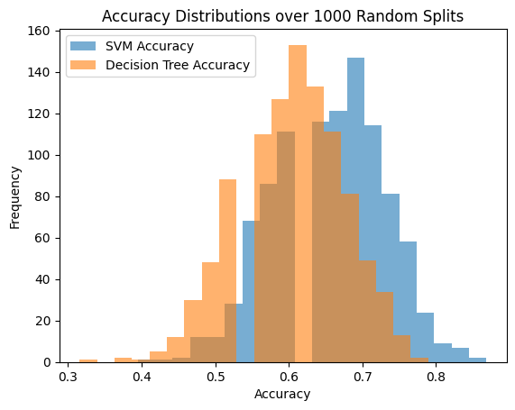
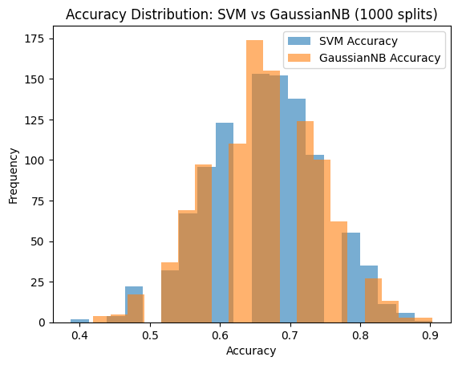

Assignment week 4
Mostafa Zamaniturk
In this homework you will learn how to build a basic supervised learning algorithm (classification) using the most popular Python machine learning library, scikit-learn. You will follow the 3 canonical steps for building a model:
1) Data preparation 2) Model fitting 3) Model evaluation & selection
We will use the World Happiness Report (WHR) data, bringing in some additional information that will enable us to formulate a classification problem to predict categorical labels on the dataset.
Execute the code cell below to import some modules and read in and preprocess the WHR data. The last line in the code cell below returns the head of the basic WHR dataframe, to show you what is in that dataset.
import pandas as pd
import matplotlib.pyplot as plt
import numpy as np
%matplotlib inline
dfraw = pd.read_excel('WHR2018Chapter2OnlineData.xls', sheet_name='Table2.1')
cols_to_include = ['country', 'year', 'Life Ladder',
'Positive affect','Negative affect',
'Log GDP per capita', 'Social support',
'Healthy life expectancy at birth',
'Freedom to make life choices',
'Generosity', 'Perceptions of corruption']
renaming = {'Life Ladder': 'Happiness',
'Log GDP per capita': 'LogGDP',
'Social support': 'Support',
'Healthy life expectancy at birth': 'Life',
'Freedom to make life choices': 'Freedom',
'Perceptions of corruption': 'Corruption',
'Positive affect': 'Positive',
'Negative affect': 'Negative'}
df = dfraw[cols_to_include].rename(renaming, axis=1)
key_vars = ['Happiness', 'LogGDP', 'Support', 'Life', 'Freedom', 'Generosity', 'Corruption', 'Positive', 'Negative']
df.head()| country | year | Happiness | Positive | Negative | LogGDP | Support | Life | Freedom | Generosity | Corruption | |
|---|---|---|---|---|---|---|---|---|---|---|---|
| 0 | Afghanistan | 2008 | 3.723590 | 0.517637 | 0.258195 | 7.168690 | 0.450662 | 49.209663 | 0.718114 | 0.181819 | 0.881686 |
| 1 | Afghanistan | 2009 | 4.401778 | 0.583926 | 0.237092 | 7.333790 | 0.552308 | 49.624432 | 0.678896 | 0.203614 | 0.850035 |
| 2 | Afghanistan | 2010 | 4.758381 | 0.618265 | 0.275324 | 7.386629 | 0.539075 | 50.008961 | 0.600127 | 0.137630 | 0.706766 |
| 3 | Afghanistan | 2011 | 3.831719 | 0.611387 | 0.267175 | 7.415019 | 0.521104 | 50.367298 | 0.495901 | 0.175329 | 0.731109 |
| 4 | Afghanistan | 2012 | 3.782938 | 0.710385 | 0.267919 | 7.517126 | 0.520637 | 50.709263 | 0.530935 | 0.247159 | 0.775620 |
First, we will augment the core WHR dataset to bring in some
additional information that is included in a different worksheet. Since
this is mostly about data processing rather than machine learning,
simply execute the next two code cells below. But study each line of
code and the associated comments, and then examine the head of the new
dataframe named df2 to understand what has been done.
# read in data from SupportingFactors worksheet into a new dataframe dfsupp
dfsupp = pd.read_excel('WHR2018Chapter2OnlineData.xls', sheet_name='SupportingFactors')
# extract out region information from SupportingFactors dataframe
regions = dfsupp[['country', 'Region indicator']].rename({'Region indicator': 'region'}, axis=1)
# examine head of regions dataframe -- each country has an associated world region
regions.head()| country | region | |
|---|---|---|
| 0 | Afghanistan | South Asia |
| 1 | Albania | Central and Eastern Europe |
| 2 | Algeria | Middle East and North Africa |
| 3 | Angola | Sub-Saharan Africa |
| 4 | Argentina | Latin America and Caribbean |
# compute the mean values of all the WHR data for each country, averaging over all years in the dataset
dfmean = df.groupby('country').mean().drop('year', axis=1)
# merge the mean WHR data with the region information extracted previously
df2 = pd.merge(dfmean, regions, on='country').dropna()
# set the index of df2 to be the country name
df2.set_index('country', inplace=True)
# examine head of df2 dataframe -- mean WHR values for each country, along with associated regions
df2.head()| Happiness | Positive | Negative | LogGDP | Support | Life | Freedom | Generosity | Corruption | region | |
|---|---|---|---|---|---|---|---|---|---|---|
| country | ||||||||||
| Afghanistan | 3.806614 | 0.580873 | 0.301283 | 7.419697 | 0.517146 | 50.838271 | 0.544895 | 0.118428 | 0.826794 | South Asia |
| Albania | 4.988791 | 0.642628 | 0.303256 | 9.247059 | 0.723204 | 68.027213 | 0.626155 | -0.105019 | 0.859691 | Central and Eastern Europe |
| Algeria | 5.555004 | 0.616524 | 0.265460 | 9.501728 | 0.804633 | 64.984461 | 0.536398 | -0.208236 | 0.661478 | Middle East and North Africa |
| Angola | 4.420299 | 0.613339 | 0.351173 | 8.713935 | 0.737973 | 51.729801 | 0.455957 | -0.077940 | 0.867018 | Sub-Saharan Africa |
| Argentina | 6.406131 | 0.840998 | 0.273187 | 9.826051 | 0.906080 | 66.764205 | 0.753122 | -0.154544 | 0.844038 | Latin America and Caribbean |
This new dataframe df2 is what we want to use for our
machine learning task. For each country in the dataset, we have a set of
numerical values ('Happiness', 'Positive', 'Negative', etc., which are
all listed in the variable key_vars) and a categorical
value ('region'). We would like to know if the raw numerical data are
predictive of the region. In other words, if someone gave you a set of
numerical data on Happiness, etc. for an unknown country, would you be
able to predict what region of the world it might be located in? This is
an example of classification, where we will train a model based on the
numerical data and the associated labels (regions).
In order to proceed, we first want to extract and process some data
from our df2 dataframe. We need to separate the data into
two parts:
y)x)Again, our goal is to build a classifier that we will train on a subset of the WHR numerical data (x) and the region data (y), so that we can predict regions from data for countries that we have not trained our model on.
In the code cell below:
df2 associated with the columns
in key_vars and assign it to the variable
x.df2 associated with the region
column, and assign it to the variable y.x and y.This cell is worth 5% of the grade for this assignment.
df2.columns
key_vars = ['Happiness', 'Positive', 'Negative', 'LogGDP', 'Support', 'Life',
'Freedom', 'Generosity', 'Corruption']
x = df2[key_vars]
y = df2['region']
print(x.shape)
print(y.shape)(152, 9)
(152,)
You should see that the shape of x is (152, 9) and the
shape of y is (152,). There are 152 samples (countries),
and 9 features (each of the key_vars) that we are using to make
predictions.
Note that the numerical data columns in x represent
different quantities and have different scales. A key step in machine
learning is standardization: the transformation of features to
be on the same scale (with a mean of 0 and a standard deviation of 1).
Standardization can substantially increase model accuracy, performance
and interpretability.
sklearn provides various utilities to perform
standardization. We will use one here called
StandardScaler, which will transform a data set so that
each resulting column has zero mean and unit standard deviation.
Carrying out this scaling is a little complicated if we want to maintain the basic structure of our dataframe, so we have provided the relevant code in the next code cell below. (The code examples describing StandardScaler in the sklearn documentation typically just extract out the numerical values in numpy arrays. For this exercise, we'd like to keep the labels together in a dataframe.)
Please perform the following steps in the below graded cell:
StandardScaler objectStandardScaler object to our dataframe
xx_scaled that contains the
scaled (transformed) data, using the column and index labels from our
unscaled dataframe xx_scaledx_scaledIn examining the output, check that the means of each column have
been scaled to nearly zero (to within a very small tolerance) and the
standard deviations have been scaled to one. Some of the very small
numbers might be printed out in scientific notation, where a number like
1.928282e-16 means 1.928282 * 10**(-16).
This cell is worth 20% of the grade for this assignment.
# 1. Import the StandardScaler
from sklearn.preprocessing import StandardScaler
# 2. Create the scaler object
scaler = StandardScaler()
# 3. Fit the scaler to the data and transform it
x_scaled_array = scaler.fit_transform(x) # This returns a NumPy array
# 4. Create a new dataframe with the same columns and index as original x
import pandas as pd
x_scaled = pd.DataFrame(x_scaled_array, columns=x.columns, index=x.index)
# 5. Print mean and standard deviation of each column
print("Means after scaling\n", x_scaled.mean())
print("Standard Deviations after scaling:\n", x_scaled.std())
# 6. Peek at the first few rows
print("\nHead of scaled data:")
print(x_scaled.head())Means after scaling
Happiness 1.782200e-16
Positive 1.811417e-16
Negative 2.337312e-16
LogGDP 6.135443e-17
Support -2.337312e-16
Life -5.843279e-17
Freedom 6.748987e-16
Generosity 1.168656e-17
Corruption 9.349247e-17
dtype: float64
Standard Deviations after scaling:
Happiness 1.003306
Positive 1.003306
Negative 1.003306
LogGDP 1.003306
Support 1.003306
Life 1.003306
Freedom 1.003306
Generosity 1.003306
Corruption 1.003306
dtype: float64
Head of scaled data:
Happiness Positive Negative LogGDP Support Life \
country
Afghanistan -1.443128 -1.262731 0.471370 -1.438896 -2.425953 -1.333584
Albania -0.360792 -0.638194 0.499009 0.054466 -0.681799 0.776161
Algeria 0.157600 -0.902184 -0.030449 0.262588 0.007447 0.402698
Angola -0.881273 -0.934399 1.170248 -0.381215 -0.556782 -1.224159
Argentina 0.936845 1.367958 0.077797 0.527632 0.866136 0.621142
Freedom Generosity Corruption
country
Afghanistan -1.397623 0.735439 0.451854
Albania -0.776670 -0.719736 0.632648
Algeria -1.462554 -1.391919 -0.456675
Angola -2.077245 -0.543385 0.672914
Argentina 0.193546 -1.042257 0.546624
Now that the data has been preprocessed, we can begin with our
classification analysis. Let's start by importing some additional tools
from sklearn. Execute the code cell below to import:
svm and tree submodulestrain_test_split functionaccuracy_score functionWe'll discuss in more detail below what each of these does.
from sklearn import svm, tree
from sklearn.model_selection import train_test_split
from sklearn.metrics import accuracy_scoreOne of the convenience functions that we imported above is called
train_test_split. As its name suggests, this function
splits a dataset into separate training and testing sets. The online
documentation indicates that it splits a dataset randomly, such that
approximately 25% of the data winds up in the test set and the remaining
75% in the training set. Note that the documentation is a bit confusing,
since the function can take a variable number of arrays as inputs. In
our case, we want to split up 2 arrays (x_scaled and
y) into coordinated test and train sets, so that the
function will return a total of 4 subarrays
(x_train, x_test, y_train, y_test).
Because train_test_split generates random splits of the
input data, each time we call the function we will get a different
split. For the purposes of code development, it's useful to be able to
get reproducible random numbers or random splits, as it makes debugging
and model improvements much easer. This can then be relaxed once one
wishes to generate statistics over many random runs. With
train_test_split, this can be accomplished by using the
random_state option; if specified with that state as an
integer, then the same random split will be generated each time the
function is called (until one changes the value of the integer). This is
known as providing a seed to the pseudo-random number generator that is
used by train_test_split.
You may enter and execute a call to train_test_split
that takes x_scaled and y as inputs, along
with the optional parameter random_state=0, and returns the
4 data subsets mentioned above, to be named as x_train,
x_test, y_train, y_test. The
online documentation provides an example of what such a function call
looks like. After the function call, print the shapes of each of the
four arrays that are returned.
At first pass, it makes sense to simply apply
train_test_split() directly to x_scaled and
y; however, there is a subtle downside. Performing
standardization prior to train_test_split() potentially
leads to 'information leakage' whereby information about the testing
dataset (its underlying distribution) is learned during the training
phase. This is because the testing data distribution is used to scale
the training dataset.
In the code cell below, please perform
train_test_split() first before applying
StandardScaler().fit() only to the training
dataset. Use that fit to transform the training dataset and the testing
dataset separately. Ultimately, you should end up with the variables
x_train_scale, x_test_scale,
y_train and y_test.
This cell is worth 5% of the grade for this assignment.
# Split the original, unscaled data
x_train, x_test, y_train, y_test = train_test_split(
x_scaled, y,
test_size=0.25,
random_state=87,
shuffle=True
)
# Create the scaler object
scaler = StandardScaler()
# Fit the scaler on the training data only
scaler.fit(x_train)
# Transform both training and test data
x_train_scale = scaler.transform(x_train)
x_test_scale = scaler.transform(x_test)
# Print shapes
print("x_train_scale shape:", x_train_scale.shape)
print("x_test_scale shape:", x_test_scale.shape)
print("y_train shape:", y_train.shape)
print("y_test shape:", y_test.shape)
print(y_test)x_train_scale shape: (114, 9)
x_test_scale shape: (38, 9)
y_train shape: (114,)
y_test shape: (38,)
country
Gabon Sub-Saharan Africa
Chile Latin America and Caribbean
Angola Sub-Saharan Africa
Malawi Sub-Saharan Africa
Burundi Sub-Saharan Africa
United States North America and ANZ
Mauritania Sub-Saharan Africa
Kuwait Middle East and North Africa
Austria Western Europe
Rwanda Sub-Saharan Africa
Libya Middle East and North Africa
Croatia Central and Eastern Europe
Netherlands Western Europe
Montenegro Central and Eastern Europe
Burkina Faso Sub-Saharan Africa
Dominican Republic Latin America and Caribbean
Sri Lanka South Asia
Greece Western Europe
Botswana Sub-Saharan Africa
Honduras Latin America and Caribbean
Taiwan Province of China East Asia
Belgium Western Europe
Bolivia Latin America and Caribbean
South Africa Sub-Saharan Africa
Mongolia East Asia
Canada North America and ANZ
Colombia Latin America and Caribbean
Ecuador Latin America and Caribbean
Tunisia Middle East and North Africa
Macedonia Central and Eastern Europe
Portugal Western Europe
Costa Rica Latin America and Caribbean
Lesotho Sub-Saharan Africa
Togo Sub-Saharan Africa
Albania Central and Eastern Europe
Sierra Leone Sub-Saharan Africa
Jordan Middle East and North Africa
Guatemala Latin America and Caribbean
Name: region, dtype: object
Having split our datasets, we want to first train a classifier on our
training data so that we can apply it to the testing data. One way of
assessing the performance of a classifier is to compute its accuracy on
the test data. That is, what fraction of the test data are correctly
predicted by the classifier? Fortunately, sklearn provides
a built-in function named accuracy_score that carries out
this computation. We imported it above, and you can read more about it
in the documentation.
We also imported above the svm and tree
submodules from sklearn. These provide support for Support Vector
Machine (svm) and Decision Tree (tree) machine learning algorithms. For
more information, review the Support Vector
Machines (SVMs) documentation and the Decision Trees
documentation. Under the hood, these are very different types of
algorithms. Decision Trees try to formulate a series of yes/no questions
based on the data that can distinguish the categories from one another.
SVMs, on the other hand, use techniques from geometry to find cuts
through the data space to separate different categories from one
another. Understanding how these methods work in detail is beyond the
scope of this exercise, but fortunately (despite the very different data
structures and algorithms used internally) sklearn provides
a uniform interface that lets us easily build these different sorts of
classifiers and compare their performance.
We will first consider SVMs, and then revisit the problem with Decision Trees.
In the code cell below:
svm.SVC() object and assign it to the
variable clf1 — a call to svm.SVC() creates a
Support Vector Classifier from the svm submodule, similar to what we did
in the earlier exercise on hand-written digitsfit method on clf1 with the
x_train_scale and y_train training data (i.e.,
training the model to associate x_train_scale with
y_train)predict method on clf1 on the
x_test_scale testing data and assign the result to the
variable predictions1, in order to make predictions for
those inputsaccuracy_score function on the y
testing data and the test predictions you generated and assign the
result to the variable score1score1The accuracy score is a fraction between 0 and 1 indicating the fraction of predictions that match the true value in the test set.
This cell is worth 20% of the grade for this assignment.
# Create the SVC model
clf1 = svm.SVC()
# Train the classifier with the training data
clf1.fit(x_train_scale, y_train)
# predict on the test set
predictions1 = clf1.predict(x_test_scale)
# Calculate the accuracy
score1 = accuracy_score(y_test, predictions1)
# Print the accuracy
print("Accuracy score:", score1)Accuracy score: 0.6842105263157895
The accuracy score reported should be around 71% (0.71). This means that approximately 29% of the countries in the test set had their regions mispredicted. While that doesn't sound great, it could be that the WHR numerical data are not always completely predictive of region. One could imagine some countries that are "outliers" in a particular region, and more closely resemble other regions based on the WHR indicators.
In the below code cell, please loop over all the predicted and true
values in the test set, and prints out the country name and predicted
region when the prediction is incorrect. An output line like:
Sri Lanka : South Asia -> Sub-Saharan Africa means that
Sri Lanka is actually part of the South Asia region but was predicted to
be part of Sub-Saharan Africa.
This cell is worth 10% of the grade for this assignment.
test_countries = x_test.index
print(len(y_test))
for i in range(len(y_test)):
true_region = y_test.iloc[i]
pred_region = predictions1[i]
if true_region != pred_region:
country = test_countries[i]
print(f"{country} : {true_region} -> {pred_region}")38
Gabon : Sub-Saharan Africa -> Middle East and North Africa
United States : North America and ANZ -> Western Europe
Rwanda : Sub-Saharan Africa -> Commonwealth of Independent States
Montenegro : Central and Eastern Europe -> Middle East and North Africa
Sri Lanka : South Asia -> Southeast Asia
Greece : Western Europe -> Central and Eastern Europe
Taiwan Province of China : East Asia -> Latin America and Caribbean
Mongolia : East Asia -> Commonwealth of Independent States
Canada : North America and ANZ -> Western Europe
Macedonia : Central and Eastern Europe -> Middle East and North Africa
Portugal : Western Europe -> Central and Eastern Europe
Albania : Central and Eastern Europe -> Middle East and North Africa
It is often not obvious what specific algorithm will work best for a
particular dataset, so it is good to be able to conduct numerical
experiments to see how different methods perform (even if we might not
fully understand why one method might work better than
another). Because sklearn provides a consistent interface
to very different types of underlying algorithms, it is easy to build
additional classifiers to carry out these kinds of comparisons. Here, we
will build a second classifier based on Decision Trees as supported by
the tree module. Decision Tree algorithms have an element
of randomness to them, so a Decision Tree can also be constructed with a
specified random_state such as an integer that seeds the
random number generator. Most of what we will do here is very similar to
the code you wrote a few cells up when you built a SVC classifier.
In the code cell below:
tree.DecisionTreeClassifier() object with
the optional argument random_state=0, and assign it to the
variable clf2 (clf2 stands for "classifier
number 2", so that we can compare with clf1 above).fit method on clf2 with the
x_train_scale and y_train training data (i.e.,
training the model to associate x_train_scale with
y_train).predict method on clf2 on the
x_test_scale testing data and assign the result to the
variable predictions2, in order to make predictions for
those inputs.accuracy_score function on the
y_test testing data and the test predictions you generated
and assign the result to the variable score2.score2.This cell is worth 10% of the grade for this assignment.
# Create the classifier with a fixed random seed for reproducibility
clf2 = tree.DecisionTreeClassifier(random_state=87)
#Train the decision tree classifier on the training data
clf2.fit(x_train_scale, y_train)
# Predict using the trained model on the test set
predictions2 = clf2.predict(x_test_scale)
# Evaluate how well it performed
score2 = accuracy_score(y_test, predictions2)
# print the score
print("Decision Tree Accuracy:", score2)Decision Tree Accuracy: 0.5789473684210527
We ran two classifiers — clf1 (SVM) and
clf2 (Decision Tree) — on a particular random
train_test_split of the full dataset. We can't really reach
any conclusions about the relative performance of the two methods just
by considering one split. Given that train_test_split can
produce different random splits, let's write a little code to compare
the two classifiers for different splits.
In the code cell below, write some code to do the following:
for loop so that you can run through the
loop 20 timestest_train_split on x and
y to get new random instances of x_train,
x_test, y_train, y_test -- in
this case, you don't want to pass in a value for
random_state since you want to get different random splits
each timex_train, and use it to transform
both x_train and x_test into
x_train_scaled and x_train_testclf1 and clf2
to x_train_scaled and y_trainclf1 and
clf2 on the x_test_scaled and
y_test testing dataprint(score1, score2, score1-score2) to get just one
line of output per iteration of the loop)Execute the code you have written. You should see it run through the
loop 20 times, for different random data splits. While the overall
performance varies from run to run, you should probably see that the SVC
classifier (clf1) generally performs a little bit better
than the DecisionTree classifier (clf2).
This cell is worth 10% of the grade for this assignment.
from sklearn.tree import DecisionTreeClassifier
# Create classifier
clf1 = svm.SVC()
clf2 = DecisionTreeClassifier()
# Loop for 20 different random splits
for i in range(20):
# random train-test split (without random state to ensure variability)
x_train, x_test, y_train, y_test = train_test_split(
x_scaled,
y,
test_size=0.25,
shuffle=True
)
# fit scaler on training data only
scaler = StandardScaler()
scaler.fit(x_train)
# Transform both training and test data
x_train_scaled = scaler.transform(x_train)
x_test_scaled = scaler.transform(x_test)
# Train both classifier
clf1.fit(x_train_scaled, y_train)
clf2.fit(x_train_scaled, y_train)
# make predictions on test data
preds1 = clf1.predict(x_test_scaled)
preds2 = clf2.predict(x_test_scaled)
# calculate accuracy
score1 = accuracy_score(y_test, preds1)
score2 = accuracy_score(y_test, preds2)
# print scores and their differences
print(f"SVM: {score1:.3f}, Decision Tree: {score2:.3f}, Difference: {score1 - score2:.3f}")
SVM: 0.658, Decision Tree: 0.579, Difference: 0.079
SVM: 0.579, Decision Tree: 0.526, Difference: 0.053
SVM: 0.632, Decision Tree: 0.605, Difference: 0.026
SVM: 0.684, Decision Tree: 0.605, Difference: 0.079
SVM: 0.658, Decision Tree: 0.737, Difference: -0.079
SVM: 0.684, Decision Tree: 0.632, Difference: 0.053
SVM: 0.632, Decision Tree: 0.632, Difference: 0.000
SVM: 0.632, Decision Tree: 0.605, Difference: 0.026
SVM: 0.684, Decision Tree: 0.658, Difference: 0.026
SVM: 0.632, Decision Tree: 0.711, Difference: -0.079
SVM: 0.632, Decision Tree: 0.447, Difference: 0.184
SVM: 0.579, Decision Tree: 0.500, Difference: 0.079
SVM: 0.605, Decision Tree: 0.658, Difference: -0.053
SVM: 0.632, Decision Tree: 0.632, Difference: 0.000
SVM: 0.579, Decision Tree: 0.579, Difference: 0.000
SVM: 0.526, Decision Tree: 0.500, Difference: 0.026
SVM: 0.658, Decision Tree: 0.579, Difference: 0.079
SVM: 0.711, Decision Tree: 0.658, Difference: 0.053
SVM: 0.605, Decision Tree: 0.632, Difference: -0.026
SVM: 0.658, Decision Tree: 0.684, Difference: -0.026
In the last code cell, you printed out the scores of the two classifiers for a small number of random splits, and examined the numerical output. Perhaps you'd rather generate a visual summary of the relative performance of the two classifiers, for a larger number of runs.
In the code cell below, copy and paste the code you wrote above and modify it to do the following:
for loop, initialize two empty
lists named all_scores1 and all_scores2 that
will be used to collect the scores of each classifier each time through
the loopscore1 and score2) to
each of the lists used to contain all the scoresplt.hist function to
plot histograms for all_scores1 and
all_scores2 together in the same plot
label option to label the
datasetsplt.hist, you should
call plt.legend to produce a legend on the plot that will
identify the two datasets based on the label options that you added to
your plt.hist callsThis cell is worth 20% of the grade for this assignment.
import matplotlib.pyplot as plt
# Initialize empty lists to collect scores
all_scores1 = []
all_scores2 = []
# Create classifiers
clf1 = svm.SVC()
clf2 = DecisionTreeClassifier()
for _ in range(1000):
# Random train-test split (no random_state)
x_train, x_test, y_train, y_test = train_test_split(
x_scaled,
y,
test_size=0.25,
shuffle=True
)
# Fit scaler on training data only
scaler = StandardScaler()
scaler.fit(x_train)
# Scale training and test data
x_train_scaled = scaler.transform(x_train)
x_test_scaled = scaler.transform(x_test)
# Train classifiers
clf1.fit(x_train_scaled, y_train)
clf2.fit(x_train_scaled, y_train)
# Predict on test data
preds1 = clf1.predict(x_test_scaled)
preds2 = clf2.predict(x_test_scaled)
# Compute accuracy
score1 = accuracy_score(y_test, preds1)
score2 = accuracy_score(y_test, preds2)
# Collect scores
all_scores1.append(score1)
all_scores2.append(score2)
# Plot histograms
plt.hist(all_scores1, bins=20, alpha=0.6, label='SVM Accuracy')
plt.hist(all_scores2, bins=20, alpha=0.6, label='Decision Tree Accuracy')
plt.xlabel('Accuracy')
plt.ylabel('Frequency')
plt.title('Accuracy Distributions over 1000 Random Splits')
plt.legend()
plt.show()

This is just the start of what you can do with scikit-learn. It is clear from the documentation that there are many different methods and algorithms for classification that are supported by the package, as well as different ways of optimizing and assessing the performance of different algorithms. If you are motivated to explore further, feel free to continue below by opening more code cells and using the scikit-learn documentation to guide some further exploration.
To gain deeper insights into the model performance, I extended the comparison by introducing another widely used and practical algorithm — Gaussian Naive Bayes (GaussianNB). Including this model allowed for a broader evaluation of the prediction results and helped validate the findings from the previous models more effectively.
from sklearn.naive_bayes import GaussianNB
from sklearn import svm
from sklearn.model_selection import train_test_split
from sklearn.preprocessing import StandardScaler
from sklearn.metrics import accuracy_score
# Create classifiers
clf1 = svm.SVC()
clf2 = GaussianNB()
# Loop for 20 different random splits
for i in range(20):
# random train-test split (without random state to ensure variability)
x_train, x_test, y_train, y_test = train_test_split(
x_scaled,
y,
test_size=0.25,
shuffle=True
)
# fit scaler on training data only
scaler = StandardScaler()
scaler.fit(x_train)
# transform both training and test data
x_train_scaled = scaler.transform(x_train)
x_test_scaled = scaler.transform(x_test)
# train both classifiers
clf1.fit(x_train_scaled, y_train)
clf2.fit(x_train_scaled, y_train)
# make predictions on test data
preds1 = clf1.predict(x_test_scaled)
preds2 = clf2.predict(x_test_scaled)
# calculate accuracy
score1 = accuracy_score(y_test, preds1)
score2 = accuracy_score(y_test, preds2)
# print scores and their difference
print(f"SVM: {score1:.3f}, GaussianNB: {score2:.3f}, Difference: {score1 - score2:.3f}")SVM: 0.658, GaussianNB: 0.684, Difference: -0.026
SVM: 0.684, GaussianNB: 0.684, Difference: 0.000
SVM: 0.605, GaussianNB: 0.711, Difference: -0.105
SVM: 0.711, GaussianNB: 0.658, Difference: 0.053
SVM: 0.737, GaussianNB: 0.737, Difference: 0.000
SVM: 0.711, GaussianNB: 0.711, Difference: 0.000
SVM: 0.605, GaussianNB: 0.605, Difference: 0.000
SVM: 0.605, GaussianNB: 0.684, Difference: -0.079
SVM: 0.553, GaussianNB: 0.684, Difference: -0.132
SVM: 0.684, GaussianNB: 0.684, Difference: 0.000
SVM: 0.632, GaussianNB: 0.658, Difference: -0.026
SVM: 0.632, GaussianNB: 0.711, Difference: -0.079
SVM: 0.816, GaussianNB: 0.579, Difference: 0.237
SVM: 0.684, GaussianNB: 0.763, Difference: -0.079
SVM: 0.553, GaussianNB: 0.605, Difference: -0.053
SVM: 0.711, GaussianNB: 0.684, Difference: 0.026
SVM: 0.684, GaussianNB: 0.711, Difference: -0.026
SVM: 0.737, GaussianNB: 0.816, Difference: -0.079
SVM: 0.605, GaussianNB: 0.605, Difference: 0.000
SVM: 0.658, GaussianNB: 0.684, Difference: -0.026
import matplotlib.pyplot as plt
from sklearn.model_selection import train_test_split
from sklearn.preprocessing import StandardScaler
from sklearn import svm
from sklearn.naive_bayes import GaussianNB
from sklearn.metrics import accuracy_score
# Initialize empty lists to collect scores
all_scores_svm = []
all_scores_nb = []
# Create classifiers
clf1 = svm.SVC()
clf2 = GaussianNB()
# Loop through 1000 different random splits
for _ in range(1000):
# Random train-test split (note lowercase x and y)
x_train, x_test, y_train, y_test = train_test_split(
x_scaled,
y,
test_size=0.2,
shuffle=True
)
# Scale the data
scaler = StandardScaler()
x_train_scaled = scaler.fit_transform(x_train)
x_test_scaled = scaler.transform(x_test)
# Train classifiers
clf1.fit(x_train_scaled, y_train)
clf2.fit(x_train_scaled, y_train)
# Predict on test data
preds1 = clf1.predict(x_test_scaled)
preds2 = clf2.predict(x_test_scaled)
# Compute accuracy
score1 = accuracy_score(y_test, preds1)
score2 = accuracy_score(y_test, preds2)
# Append scores
all_scores_svm.append(score1)
all_scores_nb.append(score2)
# Plot histogram of both models' accuracy
plt.hist(all_scores_svm, bins=20, alpha=0.6, label='SVM Accuracy')
plt.hist(all_scores_nb, bins=20, alpha=0.6, label='GaussianNB Accuracy')
plt.xlabel('Accuracy')
plt.ylabel('Frequency')
plt.title('Accuracy Distribution: SVM vs GaussianNB (1000 splits)')
plt.legend()
plt.show()
Analysis Summary:
The third algorithm, Gaussian Naive Bayes (GaussianNB), demonstrates an accuracy level comparable to that of the Support Vector Machine (SVM) classifier. When comparing all three models — SVM, Decision Tree, and GaussianNB — the results indicate that SVM and GaussianNB consistently outperform the Decision Tree classifier on this dataset. This suggests that the underlying distribution of the data may align better with the assumptions made by SVM and GaussianNB, making them more suitable choices for this classification task.
Please run your Jupyter Notebook first to generate outputs for each code cell and then export the report as a HTML file by clicking the following links (File -> Download as -> HTML (.html)). Please zip both the Jupyter Notebook and the HTML file and submit your ZIP file.